A visualization of DexGraspNet. DexGraspNet contains 1.32M grasps of ShadowHand on 5355 objects, which is two orders and one order of magnitudes larger than the previous dataset from DDG. It features diverse types of grasping that can't be achieved using GraspIt!.
 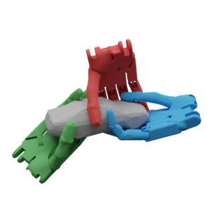
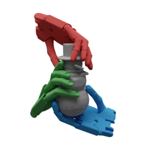
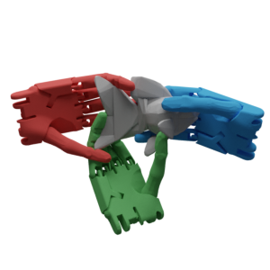
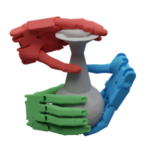
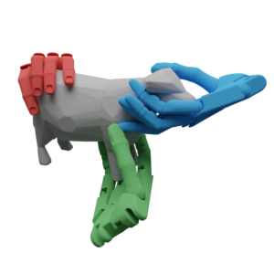
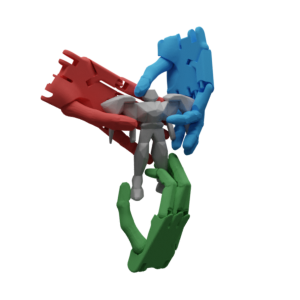
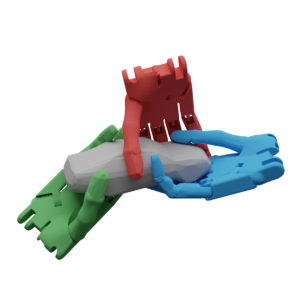
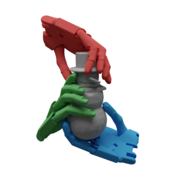
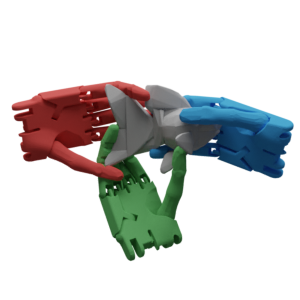
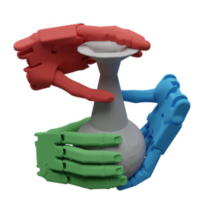
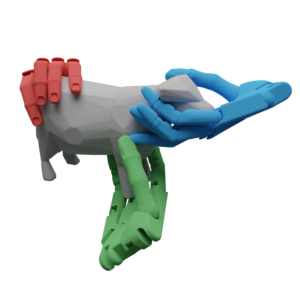
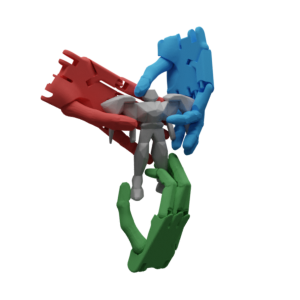